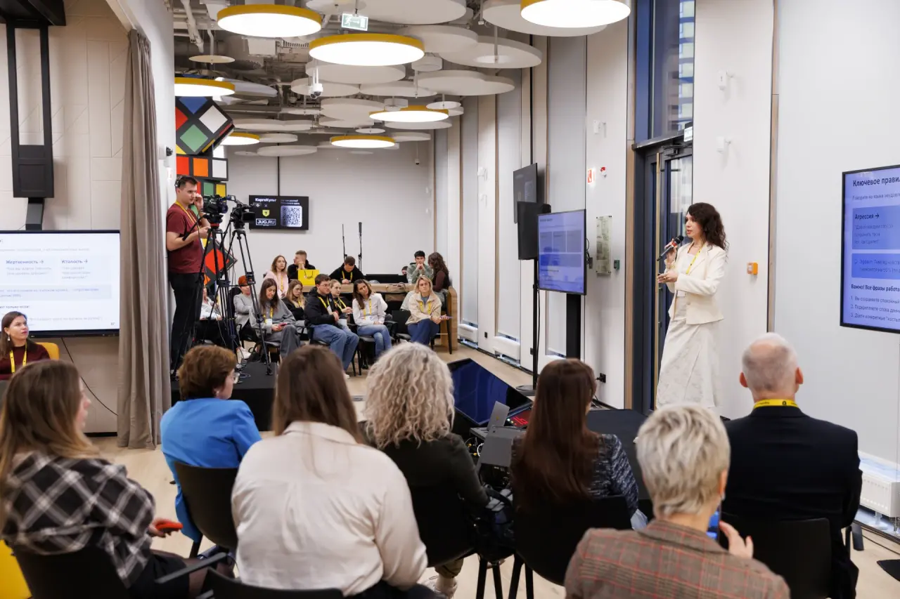

01
iOS Такой · @ios_prog
Выгорание
Отличия выгорания от усталости и стресса, признаки и восстановление.
Выступаю на IT-конференциях и участвую в подкастах о выгорании, работе с людьми, карьере и профессиональных решениях.

Выбрала темы, с которыми выступала на конференциях. Где доступна видеозапись или страница доклада — добавила прямую ссылку.
Есть коллега, с которым не хочется общаться? А приходится, ведь только он знает, как решить проблему.
После его комментариев на код-ревью хочется втащить ему. Но вместе с этим неприятно, самооценка падает ниже плинтуса, а с ней и мотивация к работе. Возникают мысли: «А не уволиться ли, чтобы его не видеть никогда». Пытаетесь найти обходные пути, задачи решаются долго.
У ситуации есть две причины:
А что если таким токсиком в команде стали вы? Посмотрев доклад, вы поймете, как изменить свое поведение и расположить к себе команду.
Доклад будет полезен разработчикам, тимлидам, менеджерам проектов.
Кому грозит выгорание, куда уходит энергия и как вернуть мотивацию и удовольствие от работы.
Как договариваться с собой об отдыхе и восстановлении.
10 тревожных сигналов выгорания команды — от митингов-зомби до руководителя-невидимки.
Рассмотрим 10 тревожных сигналов выгорания команды (митинги-зомби, проклятие предсказуемости, слепые зоны лидера, эффект пустого стула, руководитель-невидимка, синдром самозванца и др.).
А ещё обсудим:
Как распознать токсика, сохранить силы в сложном общении и разобраться с собственной токсичностью.
Разговор о мотивации, работе и деньгах.
Как принимать обратную связь и выдерживать непростые замечания.
Почему откладываем задачи и как на это влияют психологические механизмы.
Как разбираться с токсичностью, сохраняя рабочие отношения и результат.
Это выпуски, где меня пригласили как эксперта. Мой собственный подкаст «Дебаг карьеры» — отдельный проект.
Отличия выгорания от усталости и стресса, признаки и восстановление.
Профессиональное выгорание в технических командах.
Карьерные повороты, страх перемен и новая профессия после 30.
Как профессиональный опыт влияет на привычки, решения и повседневную жизнь.
О непростом общении и токсичности внутри компаний.
Можно перейти к записям и новостям о выступлениях на удобной платформе.
Видеоинтервью и записи с участием Юлии.
Открыть канал ↗Записи выступлений на IT-конференциях. Ссылки на конкретные доклады — выше на странице.
Посмотреть выступление на HolyJS ↗Анонсы, рассказы о выступлениях и ссылки на приглашения в подкасты.
Читать блог Юлии ↗Напишите, какая аудитория и какая тема вам интересны. Обсудим формат — доклад, дискуссию или гостевой выпуск.